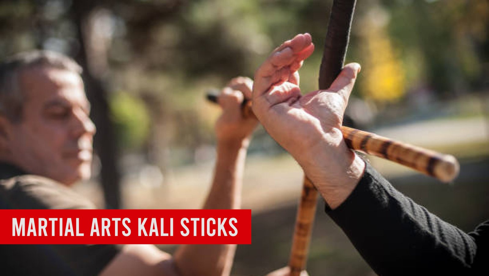
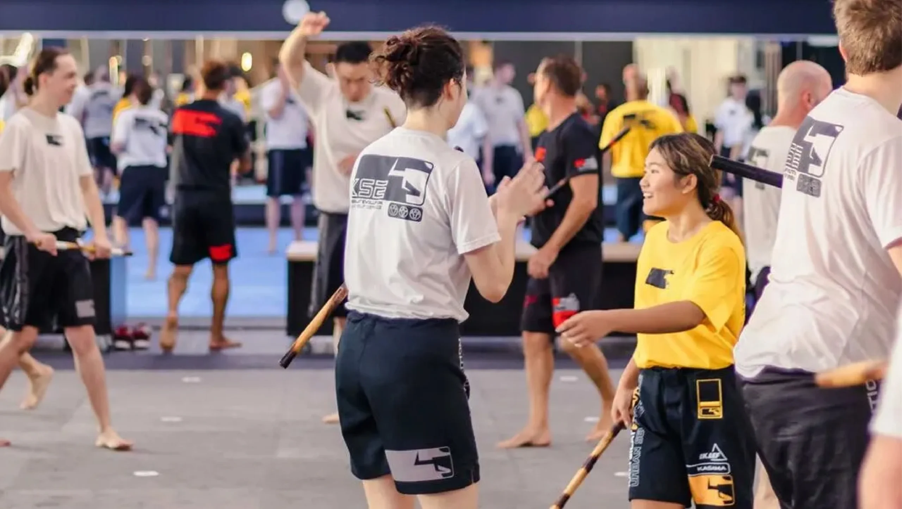
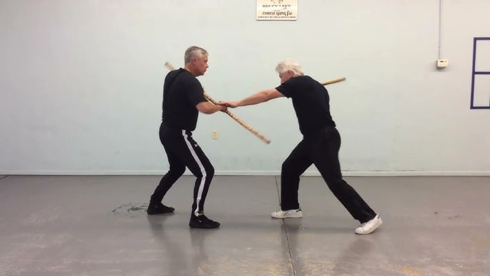

Martial Arts Kali Sticks: Techniques, History, and Benefits

Introduction
Kali sticks, also known as escrima or arnis sticks, are an essential component of Filipino martial arts, emphasizing fluid movements and weapon techniques. This blog will explore the techniques associated with martial arts Kali sticks, delve into their rich history, and highlight the numerous benefits they offer practitioners. We will discuss the various training methods, key techniques, historical contexts, and the physical and mental advantages of incorporating Kali sticks into martial arts practice.
Kali Sticks: A Martial Arts Tradition
Kali sticks have a long history in Filipino martial arts. These sticks are known for their flexibility and are used to teach important skills like speed, focus, and control. They also represent an important part of Filipino culture and fighting techniques.
Techniques to Build Skills
Learning kali stick techniques takes practice and effort. The training includes strikes and defense moves that improve hand-eye coordination, quick reactions, and overall strength. These techniques are now used by martial artists all over the world.
Benefits for Body and Mind
Kali stick training is not just about fighting—it’s great for your health too. It helps you stay fit, improves your focus, and teaches self-defense skills. Kali sticks are more than tools; they’re a fun way to stay active and gain confidence.
Key Points
- Definition and Overview: Introduction to Kali sticks and their significance in martial arts.
- Historical Background: Exploration of the origins of Kali sticks and their evolution over time.
- Techniques and Training: Detailed discussion of various techniques used in Kali stick training.
- Benefits of Training with Kali Sticks: Physical, mental, and emotional advantages of practicing Kali.
- Kali Sticks in Modern Martial Arts: Their role and relevance in contemporary martial arts and self-defense training.
- Resources for Learning: Recommended resources to further explore Kali sticks and training.
Historical Background of Kali Sticks
Let’s kick things off by exploring the fascinating history of martial arts Kali sticks. These sticks have deep roots in Filipino culture, dating back centuries. Kali skills were vital for survival in ancient times, as practitioners honed their abilities for both combat and defense. Understanding this historical context adds depth to the practice and highlights the resilience of Filipino martial arts through colonization and adaptation.
| Year | Event | Significance |
|---|---|---|
| 1521 | Arrival of Ferdinand Magellan in the Philippines | Triggered cultural exchanges that influenced Filipino martial arts. |
| 1900s | Integration of Western martial arts techniques | Led to the blending of various combat styles, enhancing the evolution of Kali. |
| 1970s | Global interest in martial arts | Increased awareness of Filipino martial arts, including Kali sticks on the world stage. |
- Ancient Practices and Instruments:
The indigenous people of the Philippines used bamboo or hardwood sticks for self-defense, passing down techniques through generations that evolved over time.
- Evolution of Kali as a Martial Art:
During Spanish colonization, Kali blended with other martial arts, enriching its techniques and strategies. It evolved into both a fighting style and a way to preserve cultural identity. Today, it reflects this unique fusion of influences.
The Structure of a Kali Stick
Understanding the design and materials of Kali sticks is key for practitioners. These attributes impact their performance and effectiveness in combat. Choosing the right stick based on training needs enhances practice and appreciation for Kali as an art and martial discipline.
- Materials Used, Lengths, and Designs: Kali sticks are typically made from durable materials like rattan, which is lightweight yet strong. They usually measure between 28 to 32 inches long. This length allows for effective striking and blocking techniques without sacrificing maneuverability.
| Material | Weight (per stick) | Strength Comparison | Common Use |
|---|---|---|---|
| Rattan | 5-7 oz | Flexible and durable | General Kali training |
| Hardwood | 10-12 oz | Very strong | Advanced techniques and displays |
| Foam | 6-10 oz | Soft, for safety | Beginner training and practice |
- Variations in Grips and Styles:
Different styles of Kali may use various grips. Some practitioners prefer a traditional grip, while others might favor a more modern approach. The grip can affect your technique, so it’s worth experimenting to see what feels comfortable for you.
Basic Techniques in Kali Sticks
Learning foundational Kali stick techniques is essential as they form the base for advanced skills. Practicing with proper form improves control, precision, and performance. Starting with strong basics ensures a solid foundation for further mastery and specialization in Kali.
Beginners in Kali should focus on mastering their stances and footwork, as these provide essential balance and power. Basic strikes such as the overhead strike, thrust, and horizontal cut can be practiced either solo or with a partner to build foundational skills.
Rhythm plays a vital role in Kali, similar to a dance where smooth movement enhances the effectiveness of techniques. Practicing flow drills helps practitioners transition seamlessly between strikes, making their movements more fluid and natural.

Advanced Techniques in Kali Sticks
After mastering the basics, practitioners advance to more complex techniques, focusing on timing, distance, and strategy. These skills improve capability and prepare for sparring or self-defense. Consistent practice is key to maintaining and evolving proficiency.
- Offensive and Defensive Maneuvers:
Advanced practitioners should learn to combine offensive and defensive techniques. For instance, a strike can quickly turn into a block, allowing for seamless transitions in combat. - Incorporating Footwork and Mobility:
Good footwork is the backbone of advanced Kali techniques. Practitioners often use lateral movements and angles to create openings in their opponent’s defense. This strategy keeps you agile and unpredictable.
Training Methods for Kali Sticks
Training is where the magic happens! Here are some methods to master martial arts Kali sticks. The diversity of training methods allows practitioners to tailor their experience based on personal goals and skill levels. Regular training sessions and drills enhance not only physical abilities but also mental acuity and focus. Committing to these methods fosters continuous improvement and engagement within the practice.
| Training Method | Benefits | Frequency |
|---|---|---|
| Solo Drills | Improves technique, speed, and form | 3-4 times a week |
| Partner Exercises | Enhances timing and distance management | 2-3 times a week |
| Sparring | Tests skills under pressure | Once a week |
Solo drills focus on improving your technique and speed. Partner exercises, on the other hand, help you apply what you’ve learned in a more dynamic setting. Practicing with a partner can also enhance your timing and distance management.
Shadow fighting allows you to visualize an opponent while practicing your techniques. Sparring is where you can test your skills in real-time. It’s a great way to learn how to react under pressure.
Sparring and Competitive Kali
Sparring is a key aspect of martial arts Kali sticks. Engaging in sparring allows practitioners to put their skills to the test while gaining confidence in their abilities. Competitive settings provide valuable experience and feedback that can’t be replicated in solo practice. Embracing the challenges of sparring helps to refine techniques and fosters a greater sense of camaraderie among martial artists.
- Rules and Etiquette in Kali Sparring:
Sparring sessions have specific rules to ensure safety. Always wear protective gear and respect your opponent. Knowing when to attack and when to hold back is crucial. - Different Formats of Competitions:
Competitions can vary widely, from forms competitions to full-contact fighting. Each format emphasizes different skills, so it’s worth exploring what suits your interests best.
Benefits of Training with Kali Sticks
Consistent Kali training offers benefits like improved physical fitness and mental clarity. These skills extend beyond martial arts, positively affecting various life aspects and boosting motivation to grow both as a practitioner and an individual.
| Benefit | Statistical Evidence | Impact |
|---|---|---|
| Physical Fitness | 70% of practitioners reported better overall fitness | Improved strength, agility, and endurance |
| Mental Discipline | 65% of students noted increased focus and mental clarity | Enhanced cognitive skills in daily tasks |
| Social Connections | 80% of students formed friendships through training | Builds community and support systems |
- Physical Benefits:
Training with martial arts Kali sticks improves strength, coordination, and endurance. Regular practice can lead to better cardiovascular health and increased muscle tone. - Mental Discipline and Focus:
Beyond physical fitness, Kali training enhances mental discipline. It requires constant focus and strategic thinking. As you learn to anticipate your opponent’s moves, you develop a sharper mind, which can translate to other areas of your life, whether that’s in school, work, or even managing daily tasks.
Kali Sticks vs. Other Martial Arts Weapons
When comparing martial arts Kali sticks with other martial arts weapons, it’s evident that Kali sticks have unique characteristics. Understanding these differences can help practitioners appreciate the distinct qualities that Kali brings to the martial arts landscape. Exploring various weapons can also enhance overall combat capabilities and flexibility in different scenarios. This comparative study enriches one’s martial practice, offering a broader perspective on techniques and strategies.
Unlike traditional swords or staffs, Kali sticks are shorter and typically used in pairs. This allows for rapid movements and combinations, making them ideal for close-quarters combat.
Training with martial arts Kali sticks also opens the door to understanding other weapons. Many principles from Kali can be applied to weapons like the sword or nunchaku, enhancing overall martial arts skills. Plus, trying new weapons keeps training fun and engaging!
Also Read Our Article: What Martial Art Destroys Boxers? Comparing Fighting Techniques for Ultimate Dominance

Kali Sticks and Self-Defense
Kali sticks are highly effective in self-defense, as their techniques are adaptable to real-world situations. Practitioners develop skills to assess threats and respond dynamically in emergencies. Self-defense training should be approached responsibly, with a focus on de-escalation and personal safety.
- Practical Applications in Real-World Scenarios:
Kali techniques are practical for real-life situations, enabling quick and effective responses in defense scenarios. These skills can be applied when facing an attacker or protecting others. - Legal Considerations in Self-Defense:
It’s important to understand the legal ramifications of using weapons in self-defense. In many places, the use of a martial arts Kali stick for defense is permissible, but it’s vital to be informed about the laws in your area.
Cultural Significance of Kali Sticks
The significance of martial arts Kali sticks extends beyond physical training; they embody rich cultural heritage. Practicing Kali connects individuals to a history that spans centuries, fostering pride in one’s cultural identity. The art form represents not only martial prowess but also serves as a means of cultural expression and preservation. Engaging with this heritage can enhance the training experience and promote a sense of belonging within the broader martial arts community.
Filipino Identity and Martial Heritage:
Kali represents much more than just self-defense; it’s a crucial part of Filipino culture. Practicing Kali sticks is a way to connect with Filipino history. For many practitioners, this connection fosters pride and a sense of belonging.
Role in Ceremonies and Cultural Events:
Kali sticks are often showcased during cultural festivals and demonstrations. They reflect not only martial prowess but also artistry and tradition, bringing communities together.
Incorporating Kali Sticks in Fitness Routines
Want to spice up your fitness routine? Here’s how to incorporate martial arts Kali sticks into your workouts. Integrating Kali stick training into fitness routines provides a unique and engaging way to stay active. The combination of martial arts techniques and physical conditioning creates a well-rounded approach to fitness that enhances both strength and stamina. Engaging in this practice can help prevent workout monotony, keeping your training fresh and exciting.
- Workout Routines that Include Kali Drill Forms:
Incorporate Kali drills into your standard workout. Create a circuit that includes shadow fighting, stick drills, and conditioning exercises. This way, you get a full-body workout while honing your skills. - Cardiovascular and Strength-Building Aspects:
Training with Kali sticks can significantly boost your cardiovascular fitness. The constant movement involved in drills and sparring increases heart rates and builds stamina. Plus, swinging the sticks helps develop upper body strength.
Resources for Learning Kali Sticks
If you’re looking to start or deepen your knowledge of martial arts, Kali sticks, there are plenty of resources out there. Utilizing a variety of learning tools can enhance the journey of mastering Kali sticks. From books to online tutorials, many resources are available to suit different learning styles. Embracing these tools fosters a continuous learning mindset, allowing practitioners to grow and evolve in their practice.
Recommended Books, Videos, and Online Courses
Consider checking out books like “Filipino Martial Arts: A Functional Approach” by Serge B. T. M. G. Orwell for foundational knowledge. Also, platforms like YouTube have countless instructional videos. Many martial artists share tips that can aid your practice from the comfort of your home.
Local Schools and Practitioners for In-Person Training
If you prefer hands-on training, seek out local martial arts schools. Many offer classes specifically focused on Filipino martial arts and Kali techniques. Joining a community is an excellent way to stay motivated and learn faster.
Popular Kali Stick Variants Around the World
Kali sticks vary in style depending on the region and school, which enriches the martial arts community. Understanding these variations enhances appreciation for the art and encourages exploration of new techniques, promoting cross-training and skill development.
Different Filipino martial arts schools emphasize distinct techniques and philosophies. For instance, some focus on flow and movement, while others prioritize striking power and control, reflecting regional influences and local history.
Future of Kali Sticks in Martial Arts
As time moves on, the practice of Kali sticks will likely continue to evolve. The dynamics of martial arts constantly change due to innovations in training and combat styles influenced by contemporary needs. Embracing new technology and teaching methodologies promises to introduce Kali sticks to an even wider audience. Understanding the future trajectory of this art can help practitioners prepare for upcoming trends and broaden their skills.
- Impact of Technology and Online Learning:
With the rise of online training platforms, more people can learn Kali from anywhere in the world. This technology is expanding access to traditional martial arts while maintaining authenticity. Virtual classes and instructional videos allow practitioners to learn at their own pace, offering flexibility in training. - How Kali Continues to Evolve and Innovate:
As martial artists continue to experiment with techniques, Kali is evolving. Modern influences and new fighting styles will likely shape how Kali sticks are taught and practiced in the future. Adaptation and incorporation of elements from other combat sports can enhance Kali, keeping it relevant in an ever-changing martial arts landscape.
FAQ's
The best martial art for beginners depends on personal goals and preferences. Brazilian Jiu-Jitsu (BJJ) is favored for its focus on technique, making it accessible for all. Karate is also a strong choice, emphasizing basic movements and self-discipline. It’s beneficial for beginners to try different classes to find what suits them best.
There is no age limit for starting martial arts! People of all ages can benefit from training. Many schools offer adult classes that cater to newcomers, allowing them to learn at their own pace and enjoy the physical and mental benefits of martial arts.
The cost of martial arts training varies by school, location, and class types. Many schools offer flexible pricing, including monthly memberships or per-class fees. It’s wise to explore different options to find a budget-friendly school that meets your needs.
Participation costs typically range from $100 to $150 per month for memberships, with per-class rates between $15 and $30. Annual memberships may be available for $800 to $1,200, often providing savings. Additionally, consider any extra fees for uniforms and equipment.
For your first day, wear comfortable athletic clothing. Most schools will provide a uniform (like a gi) for you to wear once you enroll, but you want to be ready to move in whatever you choose! Just check with the school beforehand to see if they have any specific requirements.
The time it takes to earn a belt varies widely based on the martial art and your dedication. Generally, it can range from 3 months to several years. Factors influencing this timeline include attendance, effort, and the specific belt progression system of the style you are learning.
Absolutely! Martial arts classes are intended for all fitness levels. Many schools offer beginner programs that help you gradually build your strength and flexibility, so don’t worry if you’re starting from scratch!
Train with us in Coppell
The first class is free. Shorts, a t-shirt and a water bottle. We lend the rest.
Book a free class